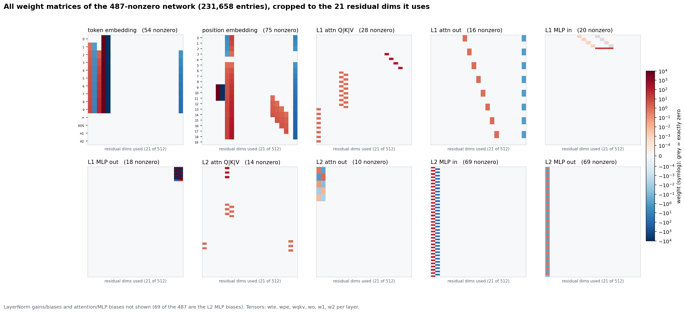
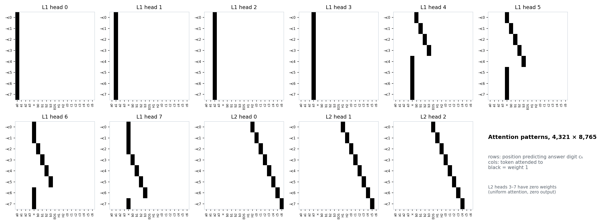
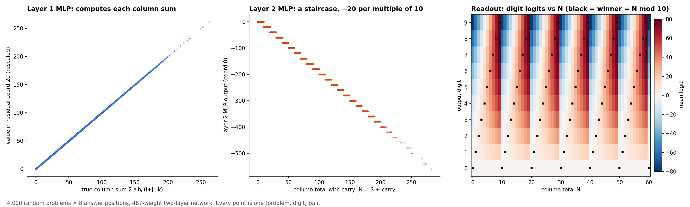

November 5, 2026
4-digit multiplication in 355 nonzero weights with 0 training
I had LLMs write every weight of small transformers that multiply 4-digit numbers, with no training. A two-layer version uses 487 nonzero weights and gets all 81 million pairs of 4-digit numbers right. A single block run in a loop gets it down to 355, and signals when it’s done.
A couple of days ago, Rikiya Takehi et al. published Sparks of Weight-Space Programming, showing LLMs reading, editing and writing neural-network weights directly. I wanted to try it myself, on something small enough to inspect closely.
Four-digit multiplication is a good target, because it’s surprisingly hard for a transformer to learn with plain training:
- Deng et al. got there by gradually removing the chain of thought during training.
- Bai et al. reverse-engineered a successful model and found that it stores partial products at earlier positions for later steps to retrieve. Their standard fixed-length training runs failed to learn the dependencies the middle digits need, partial products and carries from earlier columns. Supervising an intermediate running sum helped, and an updated version also reports 99.9% validation accuracy from mixing shorter multiplication problems into training.
Train the fixed-length task naively and it stalls. In my implementation of their two-layer setup, the model reached 0.5% exact match after 300,000 updates. Even the strongest continuation I tried, turning dropout off and resetting the optimizer between blocks, reached only 14% after another 300,000.
So instead of training it, I asked an LLM to write it.
Writing a multiplier
I gave GPT-6 Astra three things:
- the task;
- the architecture: a 14.2M-parameter, two-layer GPT-2-style transformer based on Bai et al.’s setup, with a reduced vocabulary;
- a Python sandbox.
Then I asked it to set every weight with code, without gradient updates or optimizer training. Its network scored 10,000 out of 10,000 on held-out problems before a single training step. (Claude Opus 5.5 did the same, and both landed on essentially the same algorithm.)
The network writes the product one digit at a time, least significant first, the way you would on paper.
That worked, which raised the obvious question: how small can it get?
Making it smaller
I asked Astra to shrink it, in three versions: two layers, one layer, and a single block run over and over with its weights counted once.
- Free to choose: the number of heads, every width, and, for the reused block, how many times it runs.
- Fixed: a GPT-2-style block, with causal attention, a GELU MLP, LayerNorm, and tied input and output embeddings.
- Score: the number of nonzero weights.
| Construction | Nonzero weights |
|---|---|
| One block, run 42 times | 364 |
| Two layers | 487 |
| One layer | 927 |
Each network got all of a fresh million problems right, both with float32 weights and with weights rounded to bfloat16 (float32 compute in both cases). The correct digit beats every other token outright: no ties. The two-layer and one-layer networks were also checked on all 81 million pairs of 4-digit numbers, with no errors.
The smallest of these is the reused block, and it always runs exactly 42 times. The number of passes is part of the network’s configuration, which Astra picked; the network doesn’t decide when to stop, and every problem gets all 42. A counter in the residual stream tells the block which pass it’s on. Passes 1–4 build the digit products, and 5 and 6 gather each column. After that, each pass subtracts 10 from any column whose value is still above 9. The biggest possible column, from 9999 × 9999, is 350 and needs 35 subtractions, so 41 passes cover every problem, and pass 42 writes out the digits. The schedule is timed exactly: run it 41 or 43 times and it gets all of 1,000 test problems wrong.

For scale, Astra’s original 14.2M-parameter build used 224,420 nonzero weights, so the reused block uses about 617× fewer and the two-layer version about 461× fewer. Each took about 30 Python runs.
Where the computation lives
The fun part is seeing where Astra put the arithmetic.


- Two layers.
- In the first layer, attention reads the digit pairs and nine GELUs add up each column of partial products.
- In the second layer, three heads look back at the previous two columns, at their sums and the digits already written there, to recover the carry. 69 GELUs then reduce the total to its last digit.
- This is close to what Bai et al. found inside their trained model: attention picks out the digit pairs for each column and stashes intermediate results at earlier positions for later steps to read.
- One layer.
- Sixteen attention heads do the digit multiplications themselves, by computing nonlinear averages over pairs of digits.
- A single GELU MLP turns each column sum into its last digit with a sawtooth.
- One block, 42 passes.
- A counter in the residual stream sequences a little program: multiply, gather the column, then take it mod 10 by repeated subtraction, one pass at a time.
All three get the carry partly by reading the answer digits they’ve already written. That’s fair game, since it’s exactly what greedy decoding gives you, but it does mean they don’t recompute the whole carry chain from scratch at each digit.
These are upper bounds, not proven minimums. Astra’s own guess for the one-layer floor is somewhere in the high hundreds.
Letting it stop early
Most problems don’t need 41 passes. A column is done once it has been brought below 10, which takes 6 passes plus one per 10 in its value, and random problems have much smaller columns than 9999 × 9999. So I asked both models to edit the 364-weight network so that it shows when it’s done and stays right if you keep running it.
- Opus’s edit removes the one-shot readout, so the answer is right on every pass from the moment the last subtraction finishes. It adds a “busy” token,
*, that wins at any answer position whose column still needs work. You stop at the first pass with no*. This version has 355 nonzero weights, 9 fewer than the original and the smallest network in this post. - Astra’s edit keeps its readout but makes repeating it harmless. You stop once the gap between two of the output scores drops below a threshold. This version has 365 nonzero weights, one more than the original.
Both are strictly correct at every pass count from 42 to 64 (Opus’s from 41). Each was checked on a fresh million problems, and on all million pairs with both numbers between 9000 and 9999, where the biggest columns are. Using their own stopping signals, they take 15–16 passes on a typical random problem instead of 42, and never more than 42.
The floor of 6 passes, and the long tail, come from how the block does mod 10: subtracting 10 once per pass is cheap in weights and expensive in passes. The one-layer network makes the opposite trade, taking a column sum to its last digit in a single MLP, and needs 927 weights to do it.
Why I care
What I find cool is that the model had to decide where the computation should live. Different designs trade stored weights for repeated computation in different ways, and you end up with circuits small enough to read in an afternoon.
This connects to my earlier work on algorithmic reasoning: how networks represent intermediate computations and reuse them across steps. Writing those computations directly gives me another way to study them. I have some more ambitious experiments underway, and I’m excited to share them soon.
All five networks, the programs that build them, and a script that checks them on your own random problems are on GitHub.